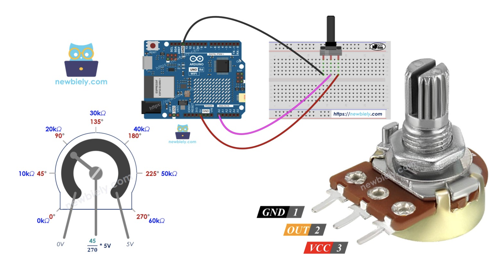
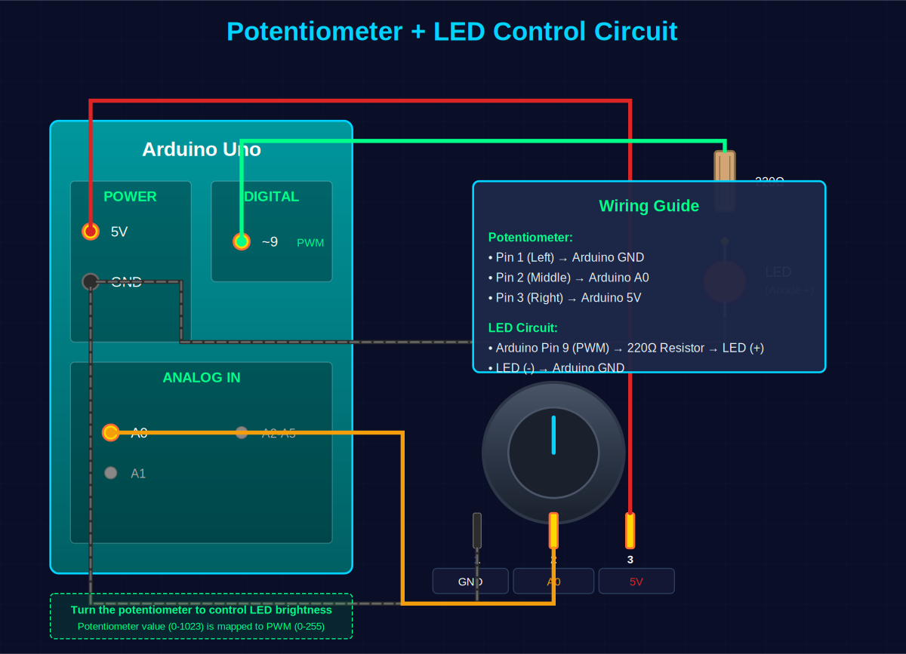

A Complete Guide to A0 - A5
Beginner ~40 minThe Arduino Uno features 6 analog input pins labeled A0 through A5. These pins are essential for reading analog sensors and converting real-world analog signals into digital values that your Arduino can process.
💡 Did You Know? Analog pins A0-A5 can also be used as digital pins! They can be referenced as pins 14-19 respectively when using digitalWrite() or digitalRead().
Arduino analog pins can read voltages between 0V and 5V. The voltage is converted to a digital value using the built-in Analog-to-Digital Converter (ADC).
The Arduino Uno uses a 10-bit ADC, which means it converts the analog voltage into a digital value ranging from 0 to 1023.
| Input Voltage | Digital Value | Description |
|---|---|---|
| 0 V | 0 | Minimum value (GND) |
| 2.5 V | 512 | Approximately middle value |
| 5 V | 1023 | Maximum value (VCC) |
⚠️ Important: Never apply voltage greater than 5V to analog pins! This can damage your Arduino. Always check your sensor specifications.
Each step represents approximately 4.88 mV (0.00488V)
Analog pins are located on the bottom right side of the Arduino Uno
int analogRead(int pin);The analogRead() function reads the voltage on an analog pin and returns a value between 0 and 1023.
// Read potentiometer connected to A0
int potPin = A0; // Analog pin A0
int potValue = 0; // Variable to store the value
void setup() {
Serial.begin(9600); // Initialize serial communication
}
void loop() {
potValue = analogRead(potPin); // Read analog value
Serial.print("Potentiometer Value: ");
Serial.println(potValue); // Print value (0-1023)
delay(500); // Wait 500ms
}Wiring: Connect the potentiometer's middle pin to A0, one outer pin to 5V, and the other to GND.

int sensorPin = A0;
int sensorValue = 0;
float voltage = 0.0;
void setup() {
Serial.begin(9600);
}
void loop() {
sensorValue = analogRead(sensorPin);
// Convert to voltage (0-5V)
voltage = sensorValue * (5.0 / 1024.0);
Serial.print("Sensor Value: ");
Serial.print(sensorValue);
Serial.print(" | Voltage: ");
Serial.print(voltage);
Serial.println(" V");
delay(1000);
}The map() function is useful for converting the 0-1023 range to other ranges.
int potPin = A0; // Potentiometer on A0
int ledPin = 9; // LED on PWM pin 9
int potValue = 0;
int brightness = 0;
void setup() {
pinMode(ledPin, OUTPUT);
Serial.begin(9600);
}
void loop() {
potValue = analogRead(potPin);
// Map 0-1023 to 0-255 for PWM
brightness = map(potValue, 0, 1023, 0, 255);
analogWrite(ledPin, brightness);
Serial.print("Pot: ");
Serial.print(potValue);
Serial.print(" | Brightness: ");
Serial.println(brightness);
delay(100);
}Wiring Instructions:

💡 How it works: The potentiometer produces a voltage between 0-5V, which is read as 0-1023 by A0. The map() function converts this to 0-255 (PWM range), and analogWrite() adjusts the LED brightness. Turn the potentiometer knob to see the LED brightness change in real-time!
void setup() {
Serial.begin(9600);
Serial.println("Reading all analog pins...");
}
void loop() {
// Read all 6 analog pins
for (int pin = 0; pin < 6; pin++) {
int value = analogRead(pin);
Serial.print("A");
Serial.print(pin);
Serial.print(": ");
Serial.print(value);
Serial.print(" | ");
}
Serial.println();
delay(1000);
}int tempPin = A0;
void setup() {
Serial.begin(9600);
}
void loop() {
int reading = analogRead(tempPin);
// Convert to voltage
float voltage = reading * 5.0 / 1024.0;
// Convert to temperature (Celsius)
// TMP36: 10mV per degree with 500mV offset
float temperatureC = (voltage - 0.5) * 100.0;
Serial.print("Temperature: ");
Serial.print(temperatureC);
Serial.println(" °C");
delay(1000);
}Wiring: TMP36 pin 1 (left) to 5V, pin 2 (middle) to A0, pin 3 (right) to GND.
int ldrPin = A0;
int ledPin = 13;
void setup() {
pinMode(ledPin, OUTPUT);
Serial.begin(9600);
}
void loop() {
int lightLevel = analogRead(ldrPin);
Serial.print("Light Level: ");
Serial.println(lightLevel);
// Turn on LED when dark (low reading)
if (lightLevel < 500) {
digitalWrite(ledPin, HIGH);
Serial.println("LED ON - It's dark!");
} else {
digitalWrite(ledPin, LOW);
Serial.println("LED OFF - It's bright!");
}
delay(500);
}Wiring: LDR and 10kΩ resistor in series between 5V and GND. Connect A0 to the junction between LDR and resistor.
int moisturePin = A1;
int pumpPin = 8;
void setup() {
pinMode(pumpPin, OUTPUT);
Serial.begin(9600);
}
void loop() {
int moisture = analogRead(moisturePin);
// Convert to percentage (calibrate these values)
int moisturePercent = map(moisture, 1023, 0, 0, 100);
Serial.print("Moisture: ");
Serial.print(moisturePercent);
Serial.println("%");
// Activate water pump if soil is too dry
if (moisturePercent < 30) {
digitalWrite(pumpPin, HIGH);
Serial.println("Watering...");
} else {
digitalWrite(pumpPin, LOW);
}
delay(2000);
}| Parameter | Value | Notes |
|---|---|---|
| Number of Pins | 6 (A0-A5) | On Arduino Uno |
| Voltage Range | 0V - 5V | Do not exceed 5V |
| ADC Resolution | 10-bit | 1024 possible values |
| Output Range | 0 - 1023 | Integer values |
| Voltage per Step | ~4.88 mV | 5V ÷ 1024 |
| Reading Time | ~100 μs | Approximately |
| Input Impedance | 100 MΩ | High impedance |
| Alternative Use | Digital I/O | Can use as pins 14-19 |
int readAnalogAverage(int pin, int samples) {
long sum = 0;
for (int i = 0; i < samples; i++) {
sum += analogRead(pin);
delay(10);
}
return sum / samples;
}
void setup() {
Serial.begin(9600);
}
void loop() {
int avgValue = readAnalogAverage(A0, 10);
Serial.print("Averaged Value: ");
Serial.println(avgValue);
delay(1000);
}Arduino analog pins A0-A5 are powerful tools for interfacing with the real world. Key points to remember:
analogRead(pin) to read valuesObjective: Create a system that reads three different sensors simultaneously and displays formatted data.
Requirements:
// Your code here!
// Hint: Use arrays to store pin numbers and sensor names
// Hint: Create functions for each sensor type
// Hint: Format output nicely with Serial.print()